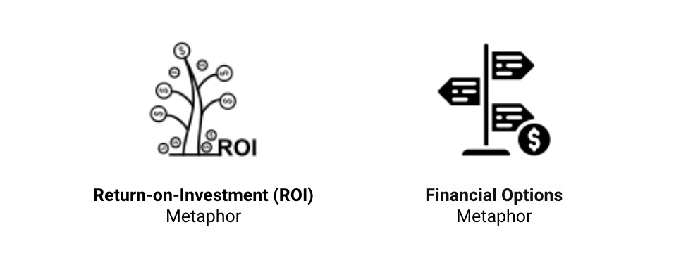
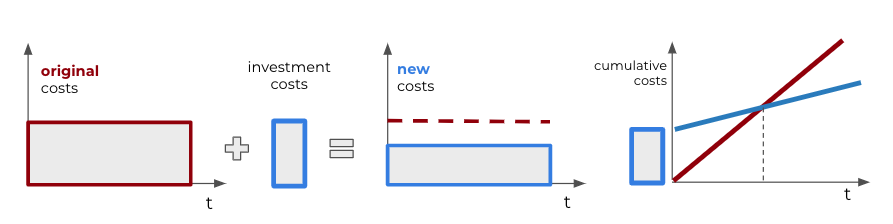
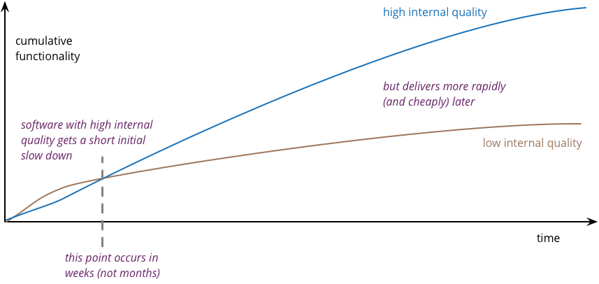
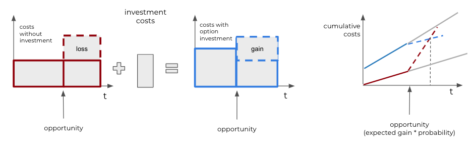

Economic Modeling

KEY POINTS:
- Architects are frequently asked about the (economic) value of architecture or technology investments.
- Answering this question is a crucial skill for any senior architect. But it may be difficult to answer this seemingly harmless question concisely and convincingly to a non-technical audience.
- Borrowing from existing literature, I sketch two answers to the question of the economic value of architecture: the return on investment metaphor and the selling options metaphor.
Architects frequently need to answer questions about (economic) value of technology investments and architecture. Answering this question is a crucial skill for any senior architect. But it may be difficult to answer this seemingly harmless question concisely and convincingly to a non-technical audience.
Why Do We Need to Explain the Economics?
Having good architecture requires some investment. This investment is time and effort spent implementing some architecture pattern, reducing technical debt, or refactoring code to align with our architecture. Consequently, we need to explain the expected value of this investment.
Martin Fowler at #oop2014: "If you use the arguments on the left to justify refactoring, you're screwed." pic.twitter.com/b9ffsudckr
— Matthias Bohlen (@mbohlende) February 6, 2014
In this post, I sketch two answers to the question of the economic value of architecture:
- the return on investment metaphor
- the financial options metaphor
 Figure 1: Two metaphors for explaining the economic value of architecture: return on investment (ROI) and financial options.
The Return-on-Investment Metaphor
In economic terms, return on investment (ROI) is a ratio between profits and costs over some period. In other words, ROI shows how much you get back from your investment. A high ROI means the investment’s gains compare favorably to its cost. As a performance measure, ROI is used to evaluate an investment’s efficiency or compare the efficiencies of several different investments.
 Figure 2: An illustration of the ROI metaphor. Investment leads to lower costs or higher value. It takes some time to reach a break-even point, a point when additional value has compensated for the investment. After the break-even point, we start to earn more profit than without the investment.
An investment in good architecture can help increase ROI of the IT. An excellent example of using the ROI metaphor to argue for investing in architecture is the port of Martin Fowler, who uses this argument to argue for the importance of investing in improving internal quality. Figure 3 summarizes his argument.
Well-architect systems are typically much easier to understand and change. As our systems continuously evolve, the return on investing in making a system easier to understand and change can be significant. The primary value of such investment comes from generating fewer errors and bugs, more straightforward modifications, short time-to-market, and improved developer satisfaction.
 Figure 3: Software with high internal quality gets a short initial slow down, but deliveres more rabidally and cheply later (source martinfowler.com/articles/is-quality-worth-cost.html).
An ROI metaphor is easy to understand by a non-technical audience, but it has its limitations to describe the value of architecture. The first limitation lies in that it is challenging to measure architecture, quality, and productivity. Consequently, too much focus on ROI can lead to an obsession with cost-cutting. Costs are easy to measure, but the value of attributes like shorter time-to-market is much more difficult to quantify. Second, ROI is a good measure, but not every investment in architecture will increase profit. That is because we frequently have to make decisions with lots of uncertainty. Nevertheless, that does not mean that we should not make such investments. The following section explains why.
The Financial Options Metaphor
Gregor Hohpe has frequently argued that the best way to explain architecture to non-technical people is by using a financial option metaphor. A financial option is a right, but not an obligation, to buy or sell financial instruments at a future point in time with some predefined price. As such, a financial option is a way to defer a decision: instead of deciding to buy or sell a stock today, you have the right to make that decision in the future at a known price.
Options are not free, and there is a complex market for buying and selling financial options. Fischer Black and Myron Scholes managed to compute the value of an option with the Black-Scholes Formula. A critical parameter in establishing the option’s value is the price at which you can purchase the stock in the future, the so-called strike price. The lower this strike price, the higher the value of the option.
 Figure 4: An illustration of the financial option metaphor. Options have a price, leading to higher initial costs. However, if an opportunity can generate more value, we gain additional profit (or lose it if we do not invest).
Applying the financial option metaphor to IT architecture, we can argue that buying options gives the business and IT a way to defer decisions. Gregor Hohpe gives an example of the server’s size that you need to purchase for a system. If your application is architected to be horizontally scalable, you can defer this decision: additional (virtual) servers can be ordered later at a known unit cost.
Another example of an IT option is architecting your system to clearly separate concerns. For instance, it may be challenging to decide early what authentication mechanism an application should use? A system that properly separates concerns allows changes to be localized so that updating one aspect of a system does not require expensive changing the whole system. Such isolation will enable you to change a decision late in the project or even after go-live, at a nominal cost. For example, if authentication is a well-isolated concern, you will need to refactor only a minimal part of the system to use another authentication system.
The option’s value originates from being able to defer the decision until you have more information while fixing the price. In times of uncertainty, the value of the options that architecture sells only increases.
As with any analogy, the financial options analogy has its limits. Again, it isn’t easy to quantify architecture values and have metrics for the value of separation of concerns or horizontal scaling. Second, while the metaphor may be easy to grasp for an economic audience, it may require explaining to other stakeholders, who may be less familiar with financial options markets.
To Probe Further
- Martin Fowler (2019): Is High Quality Software Worth the Cost?.
- Martin Fowler (2011): Tradable Quality Hypothesis.
- Gregor Hohpe (2016): Architecture: Selling Options.
Reflections ← Flexible Governance |
Reflections Rising The Bar: Architects' Career Paths → |